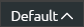
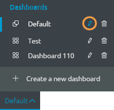

Edit or Delete a Dashboard
After creating a dashboard you can change its name or view. However, if you change its view, you will lose the state of the listings on that dashboard. Therefore when the dashboard resets you will lose any data loaded in that dashboard.
To edit a dashboard:
- Click the  at the bottom-left side of Webtop's lower toolbar.
- Click the edit icon beside the dashboard that you want to change:

- The edit window opens. Change the Name or View.
Note: If you change the view, you will lose the state of the listings on the dashboard.
- Click Save Dashboard.
Delete a Dashboard
To delete a dashboard:
- Click the at the bottom-left side of Webtop's lower toolbar.
- Click the trashcan icon beside the dashboard that you want to delete.
- A warning appears, click OK to confirm that you want to delete the dashboard.
- The dashboard will be removed.